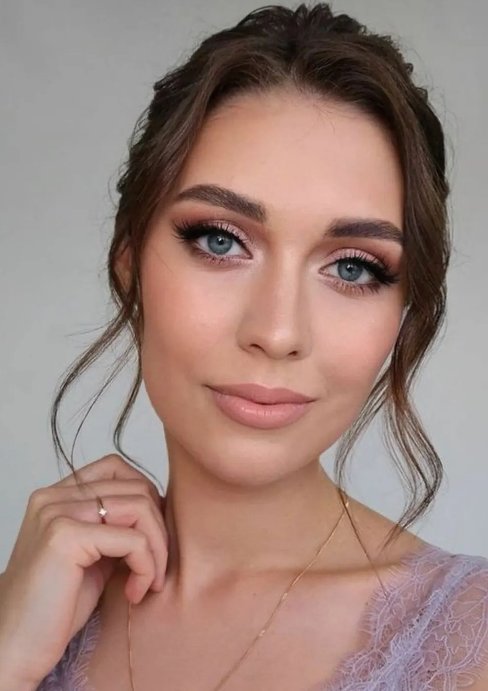
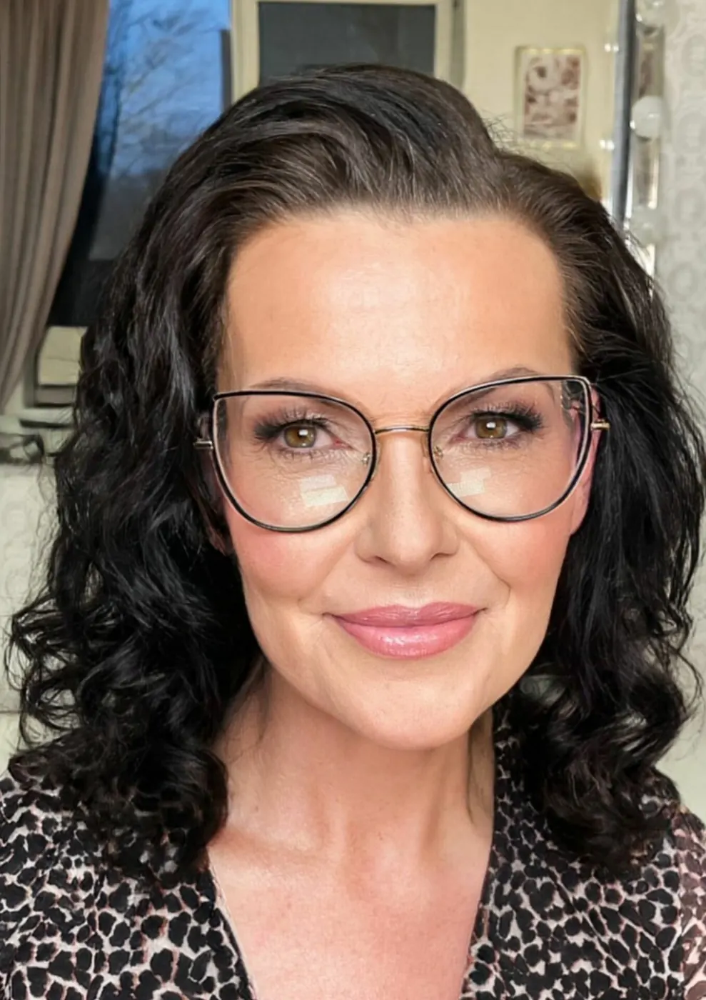
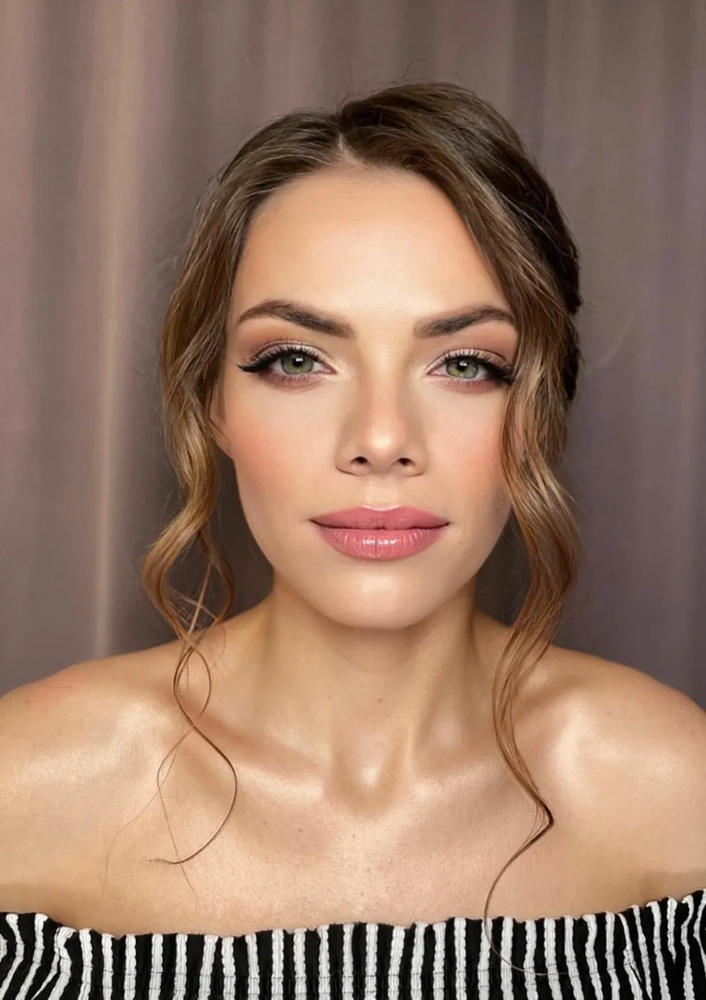
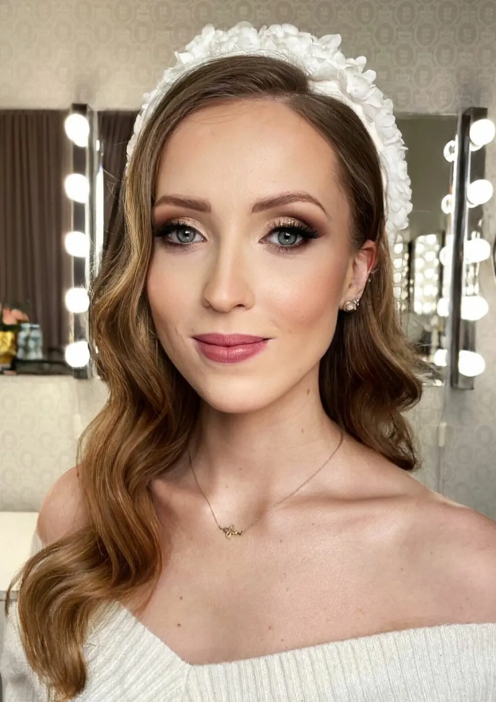
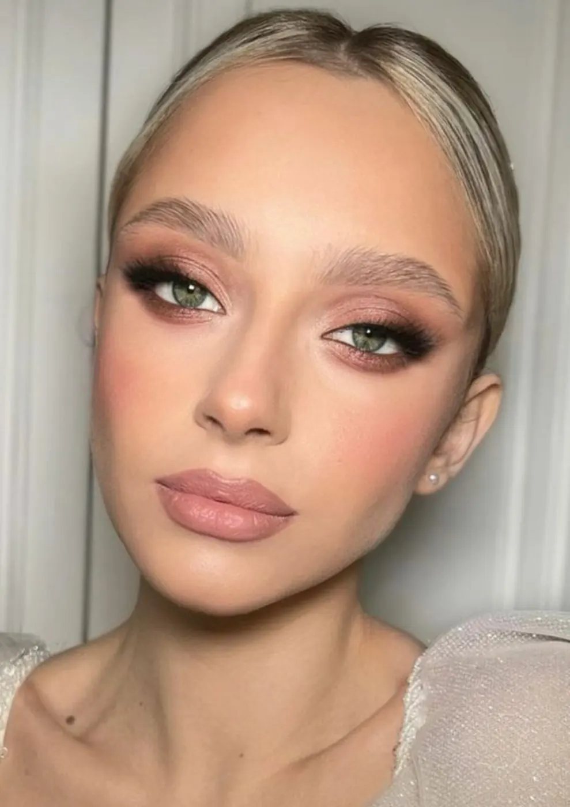
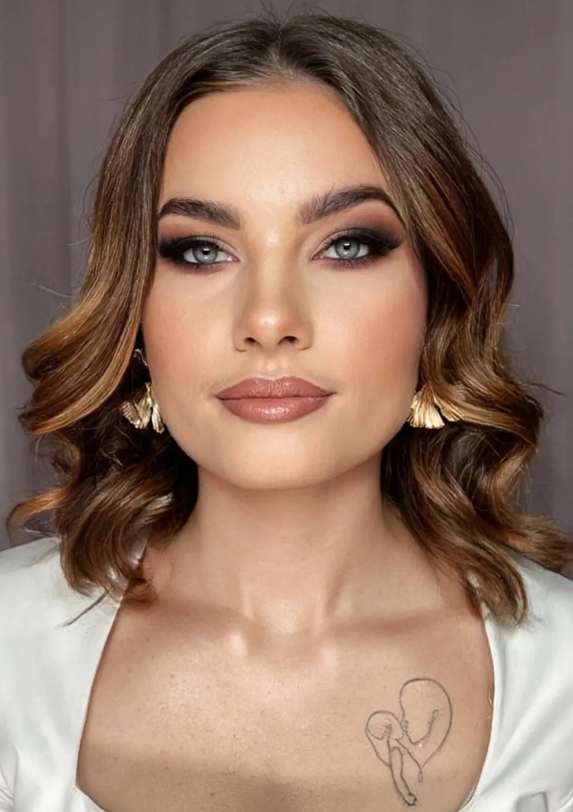
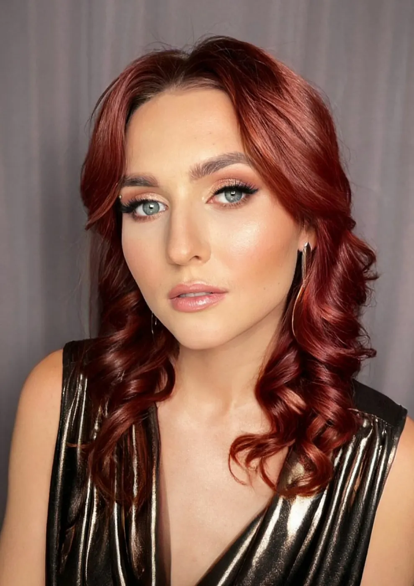
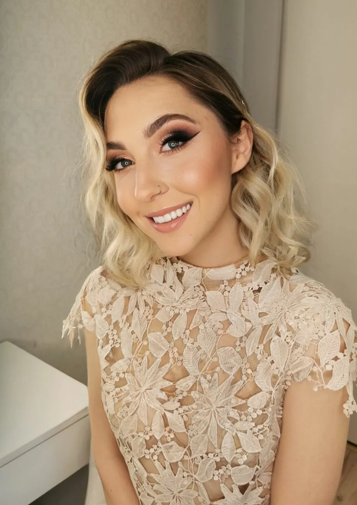
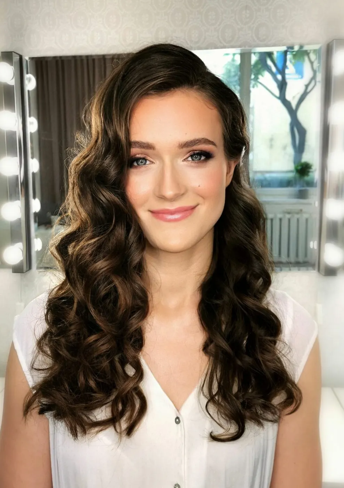

Makijaż i fryzura na każdą okazję
Naturalny czy odważny look, gala, ważne przyjęcie, ukończenie szkoły czy rodzinne spotkanie: stworzę piękny i trwały makijaż i fryzurę, które subtelnie podkreślą Twoją urodę.

Wybierz usługę, której potrzebujesz
Makijaż
- Makijaż dziennybez doczepianych rzęs, pon.-pt. w godz. 7.00-12.00350 zł45 min
- Makijaż biznesowyw cenie kępki rzęs i pakiet do poprawek350 zł60 min
- Makijaż okolicznościowyw cenie kępki rzęs i pakiet do poprawek400 zł75 min
- Makijaż wieczorowyw cenie kępki rzęs i pakiet do poprawek400 zł70 min
- Makijaż studniówkowyw cenie kępki rzęs i pakiet do poprawek400 zł70 min
- Makijaż fotograficznyw cenie kępki rzęs i pakiet do poprawek400 zł75 min
- Makijaż sylwestrowyw cenie kępki rzęs i pakiet do poprawek450 zł1 h 15 min
- Makijaż ślubny500 zł2 h
- Próba makijażu ślubnego500 zł2 h
- Makijaż do sesji poślubnejw cenie kępki rzęs i pakiet do poprawek450 zł1 h 30 min
- Usługa realizowana w niedzielę: + 100 zł
- Usługa realizowana w lokacji: + 50 zł do ceny każdej usługi
- Przy dojeździe koszt liczony indywidualnie
Fryzura
- Fryzura, włosy krótkiedo linii brody250 zł45 min
- Fryzura, włosy półdługiedo ramion320 zł60 min
- Fryzura, włosy długiedo łopatek350 zł75 min
- Fryzura, włosy bardzo długiedo pasa370 zł90 min
- Fryzura do sesji poślubnej450 zł90 min
- Próba fryzury ślubnej500 zł2 h
- Fryzura ślubna500 zł2 h
- Usługa realizowana w niedzielę: + 100 zł
- Usługa realizowana w lokacji: + 50 zł do ceny każdej usługi
- Przy dojeździe koszt liczony indywidualnie
Co mnie wyróżnia
Komfort i indywidualne podejście
Wsłuchuję się w Twoje potrzeby. Nie masz pomysłu na makijaż i fryzurę? Przy herbacie lub kawie wyczaruję look, który podkreśli Twoją urodę i będzie pasował do okoliczności.
Jakość, precyzja i higiena
Staranne wykonanie i wysokiej jakości kosmetyki dają bardzo trwały makijaż i fryzurę na całą imprezę. Usługi świadczę w najwyższym standardzie higieny.
Dbałość o szczegóły
Każdy makijaż poprzedza zabieg pielęgnacyjny dobrany do Twojej skóry. Dzięki temu makijaż jest lekki, bez efektu maski, a jednocześnie bardzo trwały.
Portfolio










Sprawdź opinie osób, które już skorzystały
Polecam zdolne dłonie i fenomenalny zmysł Pani Ani. Jej makijaż, który wykonała dla mnie już nie pierwszy raz, zaskakuje starannością oraz jakością użytych kosmetyków. Każdy z nich utrzymywał świeżość przez wiele godzin. O fryzurach nie wspomnę, zawsze były starannie dobrane do okazji. Gorąco polecam!
Jestem w 100% zadowolona z makijażu i fryzury. Czułam się wyjątkowo, ale nie sztucznie. Makijaż świetnie się trzymał. Lekki, świeży, przyciągający spojrzenia. Fryzura przetrwała bez problemu 4 dni. Bardzo polecam każdej kobiecie na wyjątkowe okazje. Dziękuję, Aniu!
Świetna, profesjonalna usługa: makijaże i fryzury do sesji biznesowej wykonane szybko, sprawnie i do tego bardzo ładnie, każdy dobrany indywidualnie do malowanej osoby. Nigdy nie widziałam, żeby ktoś w tak krótkim czasie był w stanie wykonać tak piękne makijaże i fryzury. Gorąco polecam p. Anię!
Jestem bardzo zadowolona z usługi. Wszystkie moje uwagi i prośby zostały uwzględnione, propozycje od p. Ani były trafne i pasowały do całej stylizacji. Nic nie musiałam poprawiać, wszystko przetrwało całą noc. Całość wyglądała pięknie!
Najczęściej zadawane pytania
Kiedy najlepiej zapisać się na makijaż lub fryzurę?
Im szybciej, tym lepiej. Jeśli znasz już datę uroczystości, zapraszam do kontaktu. Ze względu na imprezy, sesje, eventy, szkolenia i stałe klientki terminarz szybko się zapełnia.
Jak długo trwa wykonanie makijażu i fryzury?
Makijaż trwa zazwyczaj około 60 minut, fryzura od 40 do 80 minut, zależnie od długości włosów i rodzaju fryzury. Dokładny czas podaję przy każdej usłudze.
Jak przygotować się do usługi?
- Na tydzień przed makijażem wykonaj min. 2 razy peeling twarzy (w tym jeden dzień przed) i codziennie nawilżaj skórę oraz usta.
- Na 2-3 dni przed usługą wykonaj regulację brwi.
- Na czesanie przyjdź w czystych, świeżo umytych i wysuszonych włosach. Jeśli mamy wpiąć dekoracje, przygotuj je.
- Załóż bluzkę z większym dekoltem lub koszulę rozpinaną z przodu, żeby przebrać się bez uszkodzenia makijażu i fryzury.
Na jakich kosmetykach pracuję?
Na profesjonalnych produktach marek dla wizażystów i marek premium, m.in. Kanebo, Shiseido, Guerlain, Benefit, Smashbox, Estée Lauder, Chanel, YSL, Rare Beauty, Inglot, MAC, Dior, Lancôme, Bobbi Brown, Natasha Denona, Tom Ford, Huda Beauty, Charlotte Tilbury, Kryolan, Ben Nye, Hourglass, Mahron, NYX, Urban Decay, Clinique. Pracuję na jednorazowych aplikatorach i gąbkach, dezynfekuję pędzle i kosmetyki. Fryzury wykonuję na profesjonalnych salonowych kosmetykach do stylizacji.
Co wykonujemy najpierw: makijaż czy fryzurę?
Najpierw makijaż, potem fryzurę. Jeśli fryzurę robisz u swojego fryzjera, najpierw uczesanie, a potem wizyta u mnie na makijaż.
Nie widzisz umówionych wizyt w aplikacji Booksy?
Jeśli nie rezerwowałaś wcześniej przez Booksy, wizyty umówione telefonicznie lub mailowo nie będą widoczne w aplikacji. Wejdź na annastachniak.booksy.com, wybierz w ofercie Makijaż: „Pierwsza usługa: aktywacja systemu Booksy”, zarezerwuj dowolny termin i odśwież aplikację. Wizyty pojawią się w zakładce Wizyty.
Jak kupić voucher na makijaż lub fryzurę?
W sklepie wybierz Voucher podarunkowy, następnie wartość (np. 200 zł) lub konkretną usługę. Voucher otrzymasz elektronicznie do samodzielnego wydruku, jest ważny 6 miesięcy od zakupu.
Gdzie wykonuje Pani makijaże i fryzury?
W kameralnym studiu na warszawskim Mokotowie, 5 minut spacerem od metra Służew: ul. J.S. Bacha 35, piętro 1, domofon przy drzwiach wejściowych. Przed posesją bezpłatne miejsca parkingowe.
Czy dojeżdża Pani do Klientek?
Dojazd na terenie Warszawy jest możliwy w okresie listopad-maj przy zamówieniu minimum 4 usług (np. dwóch makijaży i dwóch fryzur). Koszt dojazdu w Warszawie i poza nią ustalany jest indywidualnie. Pracuję i dojeżdżam na terenie całej Polski.
Co wliczone jest w cenę makijażu?
- wywiad o cerze i preferencjach
- analiza rodzaju cery i proporcji twarzy
- krótki zabieg pielęgnujący przygotowujący cerę
- makijaż na profesjonalnych kosmetykach, z kępkami lub paskiem rzęs i utrwaleniem fixerem na życzenie
- koszt użytych kosmetyków
- pakiet poprawkowy (próbka szminki i bibułki matujące)
Co wliczone jest w cenę fryzury?
- wywiad o włosach i preferencjach
- analiza proporcji twarzy
- pielęgnacja i przygotowanie włosów do czesania
- fryzura na profesjonalnych kosmetykach do stylizacji
- koszt wsuwek, kokówek, gumek, wypełniaczy do koka i kosmetyków